상하이 19곳 · 상하이 페이지 →
 AP · IB DP상하이 공식 출처 확인
AP · IB DP상하이 공식 출처 확인
상하이 아메리칸 스쿨 (SAS) 과외
Shanghai American School · 미국식 커리큘럼, 푸시·푸동 캠퍼스
수학·영어·과학 1:1 화상과외 안내 →
 AP상하이 공식 출처 확인
AP상하이 공식 출처 확인
콩코디아 인터내셔널 스쿨 상하이 과외
Concordia International School Shanghai · 미국식 커리큘럼
수학·영어·과학 1:1 화상과외 안내 →
덜위치 칼리지 상하이 푸동 과외
Dulwich College Shanghai Pudong · 영국식 커리큘럼
수학·영어·과학 1:1 화상과외 안내 →
덜위치 칼리지 상하이 푸시 과외
Dulwich College Shanghai Puxi · 영국식 커리큘럼
수학·영어·과학 1:1 화상과외 안내 →
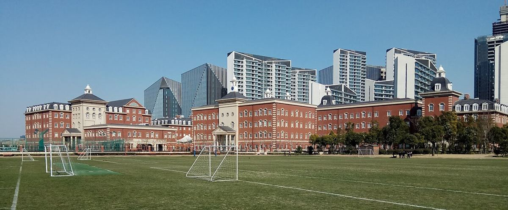
IGCSE · IB DP상하이웰링턴 칼리지 인터내셔널 상하이 과외
Wellington College International Shanghai · 영국식 커리큘럼
수학·영어·과학 1:1 화상과외 안내 →
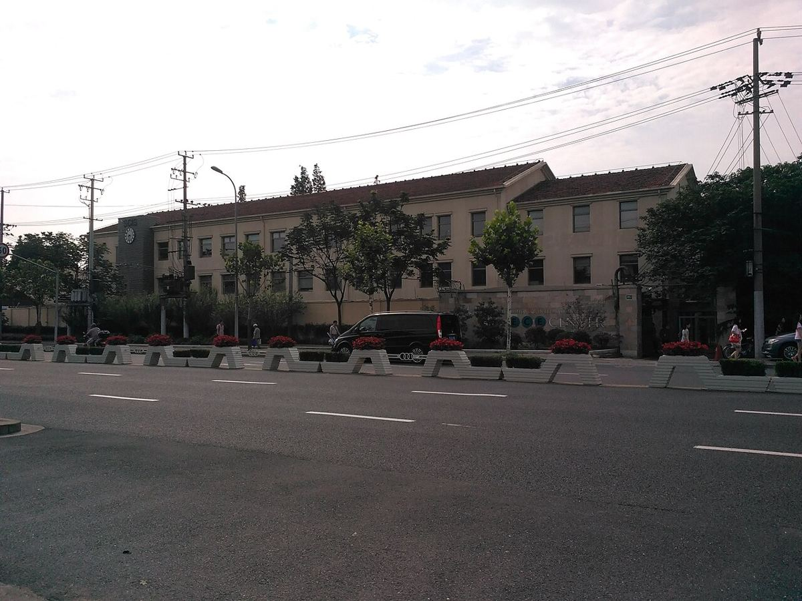
IB DP상하이 공식 출처 확인상하이 커뮤니티 인터내셔널 스쿨 (SCIS) 과외
Shanghai Community International School · IB 연속과정
수학·영어·과학 1:1 화상과외 안내 →
웨스턴 인터내셔널 스쿨 오브 상하이 (WISS) 과외
Western International School of Shanghai · IB 연속과정
수학·영어·과학 1:1 화상과외 안내 →
예청 국제학교 상하이 (YCIS) 과외
Yew Chung International School of Shanghai
수학·영어·과학 1:1 화상과외 안내 →
브리티시 인터내셔널 스쿨 상하이 푸시 (BISS) 과외
The British International School Shanghai, Puxi · 노드 앵글리아 산하
수학·영어·과학 1:1 화상과외 안내 →
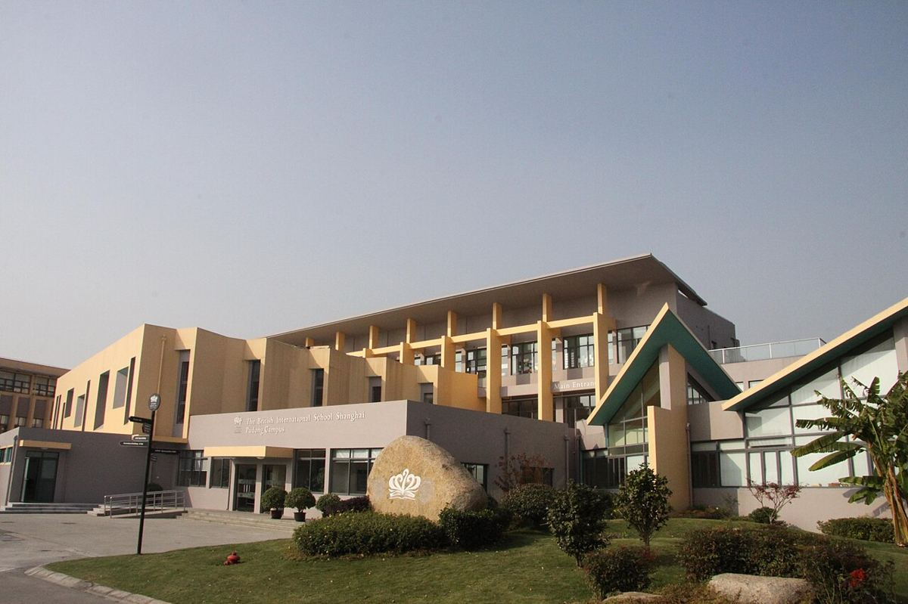
IGCSE · IB DP상하이 공식 출처 확인노드 앵글리아 인터내셔널 스쿨 상하이 푸동 (NAIS) 과외
Nord Anglia International School Shanghai, Pudong · 노드 앵글리아 산하
수학·영어·과학 1:1 화상과외 안내 →
해로우 인터내셔널 스쿨 상하이 과외
Harrow International School Shanghai · 영국식 커리큘럼
수학·영어·과학 1:1 화상과외 안내 →
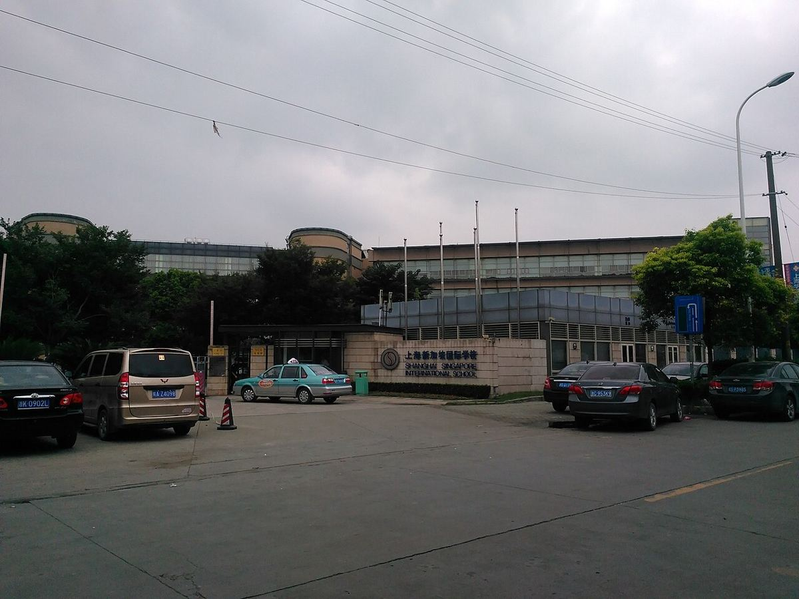
IGCSE · IB DP상하이상하이 싱가포르 국제학교 (SSIS) 과외
Shanghai Singapore International School
수학·영어·과학 1:1 화상과외 안내 →
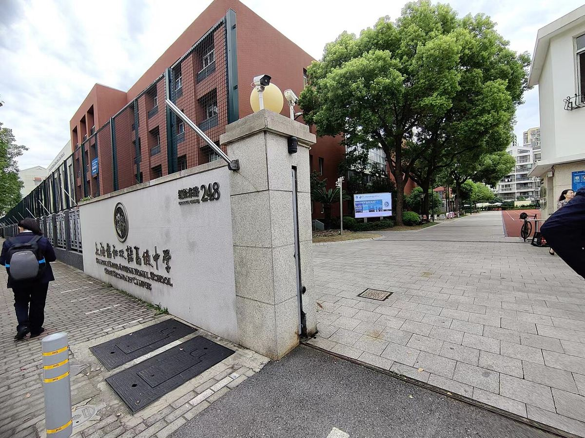
IB DP상하이상하이 유나이티드 국제학교 (SUIS) 과외
Shanghai United International School · 구베이 등 다수 캠퍼스
수학·영어·과학 1:1 화상과외 안내 →
브리태니카 인터내셔널 스쿨 상하이 과외
Britannica International School Shanghai · 영국식 커리큘럼
수학·영어·과학 1:1 화상과외 안내 →
상하이 하이스쿨 국제부 (SHSID) 과외
Shanghai High School International Division · 상하이중학 국제부
수학·영어·과학 1:1 화상과외 안내 →
상하이 리빙스턴 아메리칸 스쿨 과외
Shanghai Livingston American School · 미국식 커리큘럼
수학·영어·과학 1:1 화상과외 안내 →
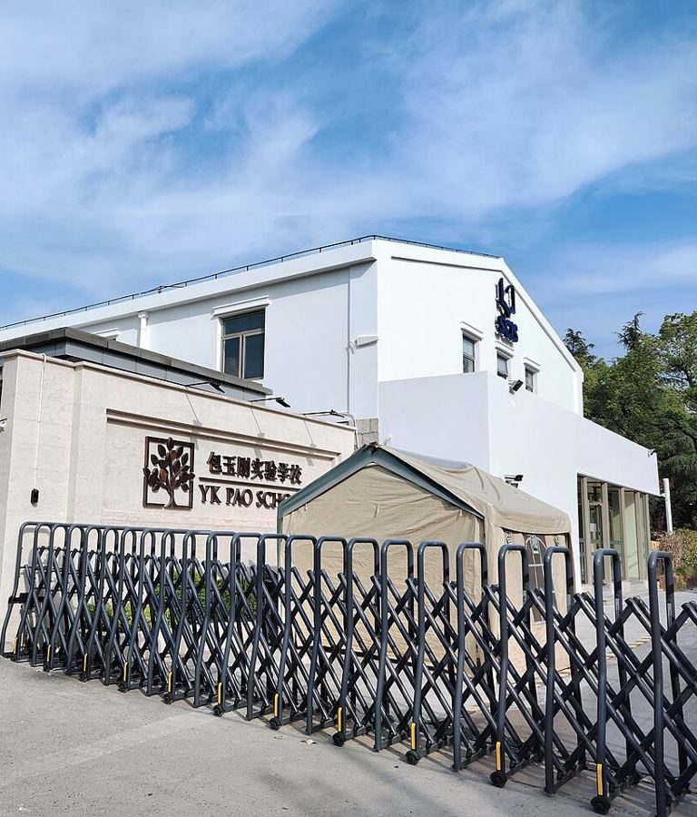
IGCSE · IB DP상하이 공식 출처 확인YK 파오 스쿨 과외
YK Pao School · 중영 이중언어 학교
수학·영어·과학 1:1 화상과외 안내 →
홍차오 국제학교 (HQIS) 과외
Hong Qiao International School
수학·영어·과학 1:1 화상과외 안내 →
상하이 SMIC 사립학교 국제부 과외
SMIC Private School (International Division) · 미국식 커리큘럼
수학·영어·과학 1:1 화상과외 안내 →
베이징 12곳 · 베이징 페이지 →
인터내셔널 스쿨 오브 베이징 (ISB) 과외
International School of Beijing · 순이 지역
수학·영어·과학 1:1 화상과외 안내 →
 IB DP베이징 공식 출처 확인
IB DP베이징 공식 출처 확인
웨스턴 아카데미 오브 베이징 (WAB) 과외
Western Academy of Beijing · IB 연속과정
수학·영어·과학 1:1 화상과외 안내 →
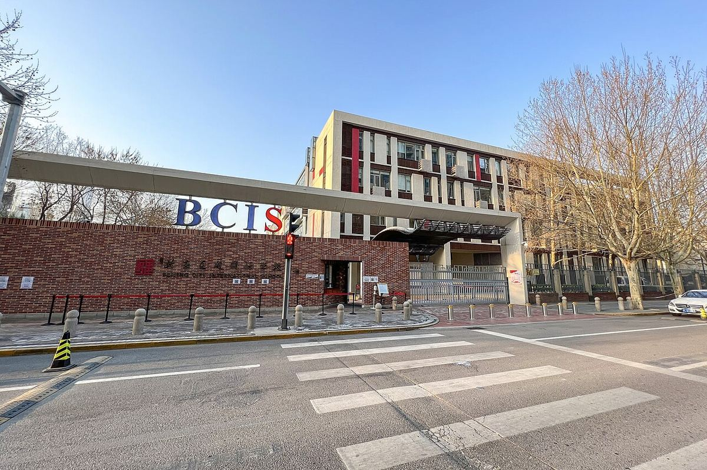
IB DP베이징베이징 시티 인터내셔널 스쿨 (BCIS) 과외
Beijing City International School · IB 연속과정
수학·영어·과학 1:1 화상과외 안내 →
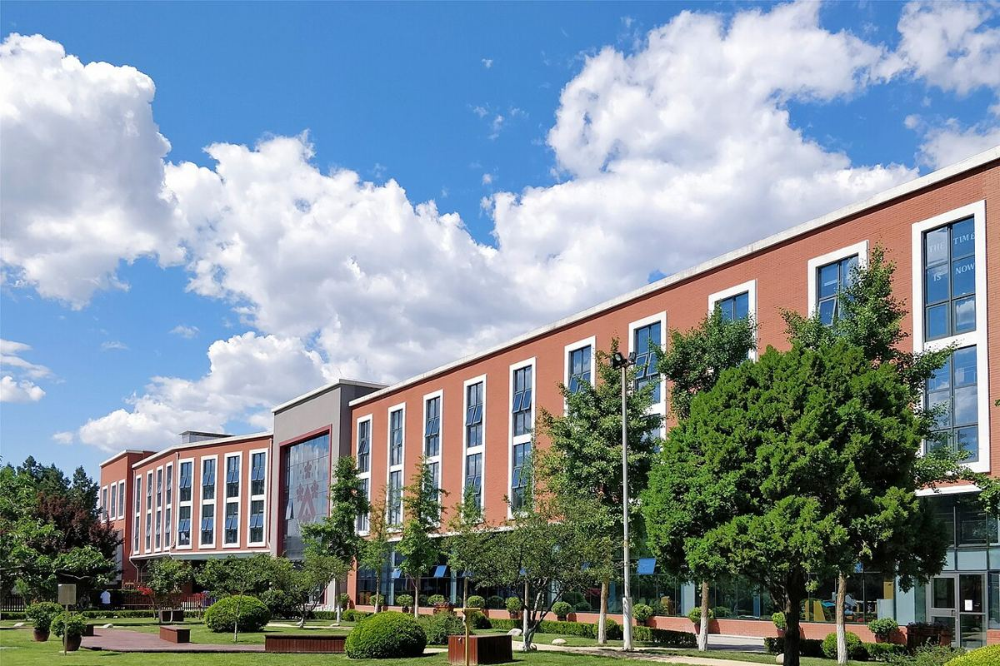
IGCSE · IB DP베이징 공식 출처 확인덜위치 칼리지 베이징 과외
Dulwich College Beijing · 영국식 커리큘럼
수학·영어·과학 1:1 화상과외 안내 →
해로우 인터내셔널 스쿨 베이징 과외
Harrow International School Beijing · 영국식 커리큘럼
수학·영어·과학 1:1 화상과외 안내 →
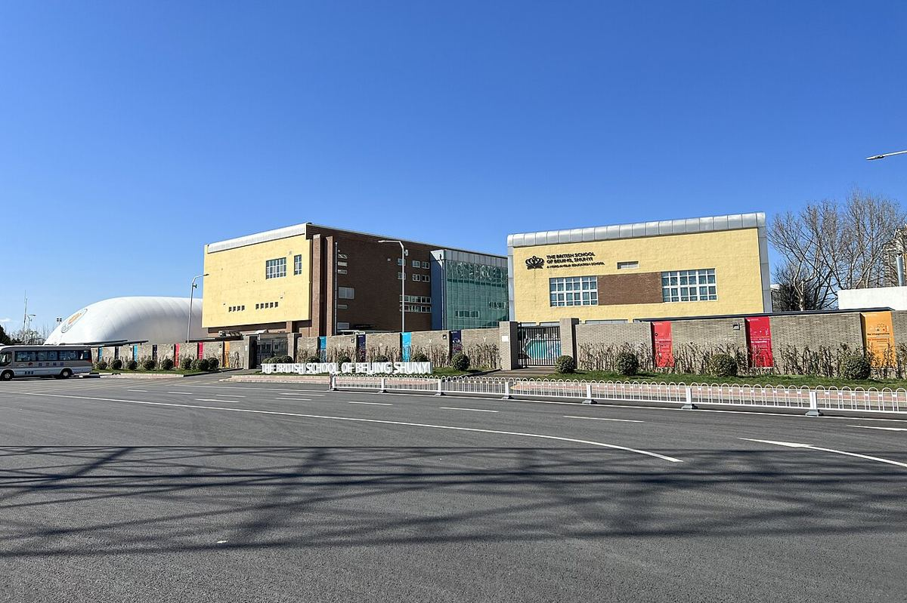
IGCSE · IB DP베이징브리티시 스쿨 오브 베이징 순이 (BSB) 과외
The British School of Beijing, Shunyi · 노드 앵글리아 산하
수학·영어·과학 1:1 화상과외 안내 →
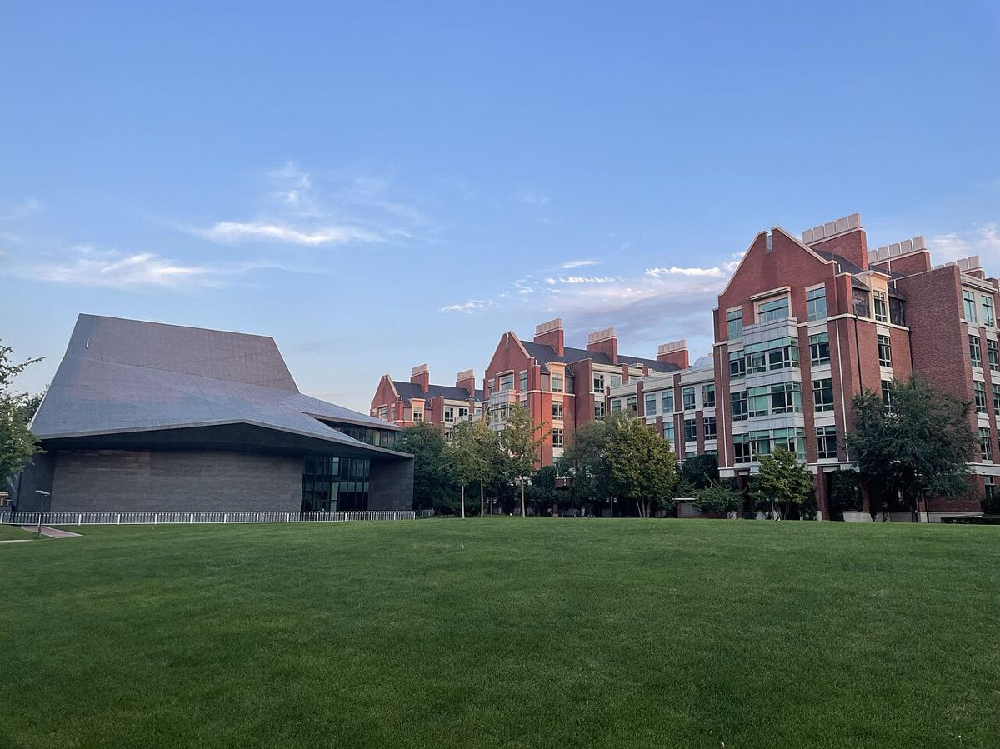
IB DP베이징 공식 출처 확인키스톤 아카데미 과외
Keystone Academy · 중영 이중언어, 기숙 운영
수학·영어·과학 1:1 화상과외 안내 →
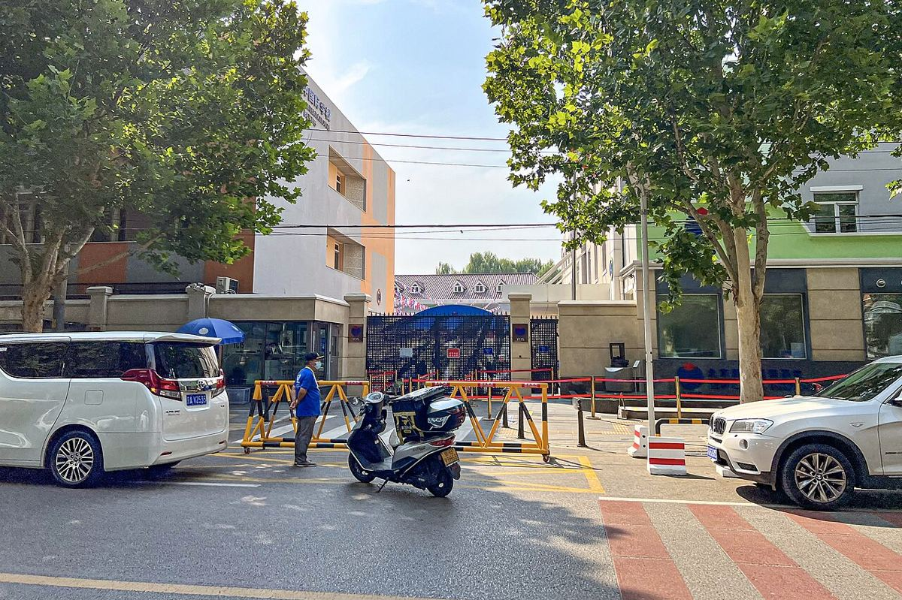
IGCSE · IB DP베이징예청 국제학교 베이징 (YCIS) 과외
Yew Chung International School of Beijing
수학·영어·과학 1:1 화상과외 안내 →
캐나디안 인터내셔널 스쿨 오브 베이징 (CISB) 과외
Canadian International School of Beijing
수학·영어·과학 1:1 화상과외 안내 →
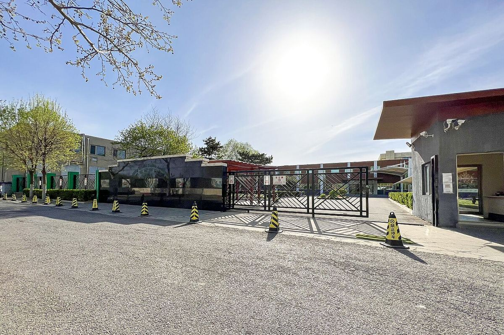
IB DP베이징베이징 월드 유스 아카데미 (BWYA) 과외
Beijing World Youth Academy
수학·영어·과학 1:1 화상과외 안내 →
베이징 55중 국제부 과외
Beijing No.55 High School International Student Section · 공립학교 국제부
수학·영어·과학 1:1 화상과외 안내 →
칭화 인터내셔널 스쿨 (THIS) 과외
Tsinghua International School · 미국식 커리큘럼
수학·영어·과학 1:1 화상과외 안내 →
광저우 6곳 · 광저우 페이지 →
아메리칸 인터내셔널 스쿨 오브 광저우 (AISG) 과외
American International School of Guangzhou
수학·영어·과학 1:1 화상과외 안내 →
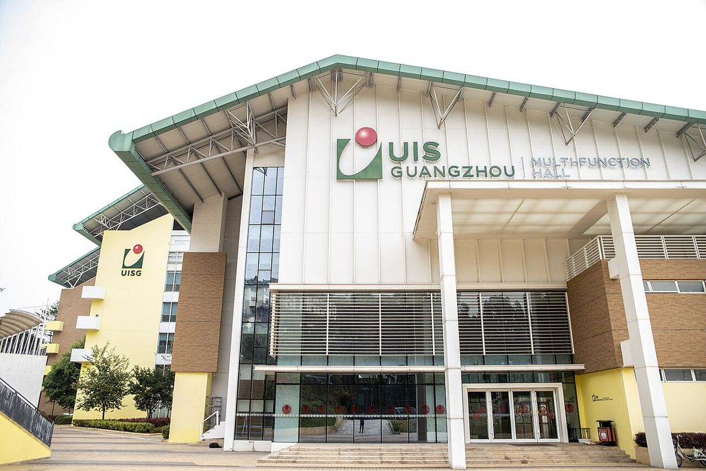
IB DP광저우유타로이 국제학교 광저우 (UISG) 과외
Utahloy International School Guangzhou · IB 연속과정
수학·영어·과학 1:1 화상과외 안내 →
유타로이 국제학교 쩡청 (UISZ) 과외
Utahloy International School Zengcheng · 기숙 운영
수학·영어·과학 1:1 화상과외 안내 →
브리티시 스쿨 오브 광저우 (BSG) 과외
The British School of Guangzhou · 노드 앵글리아 산하
수학·영어·과학 1:1 화상과외 안내 →
캐나디안 인터내셔널 스쿨 오브 광저우 (CIS) 과외
Canadian International School of Guangzhou · 캐나다 온타리오 커리큘럼
수학·영어·과학 1:1 화상과외 안내 →
ISA 사이언스시티 국제학교 광저우 과외
ISA Science City International School of Guangzhou · IB 연속과정
수학·영어·과학 1:1 화상과외 안내 →
선전 8곳 · 선전 페이지 →
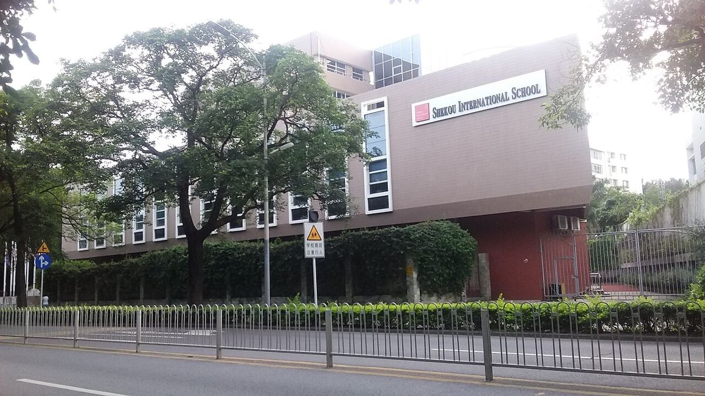
IB DP선전셔커우 인터내셔널 스쿨 (SIS) 과외
Shekou International School
수학·영어·과학 1:1 화상과외 안내 →
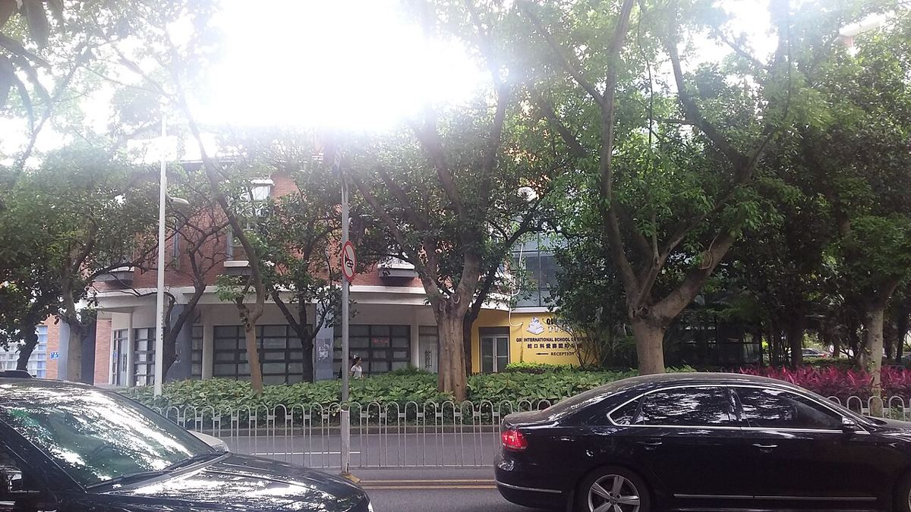
AP선전QSI 인터내셔널 스쿨 오브 선전 과외
QSI International School of Shenzhen · 미국식 커리큘럼
수학·영어·과학 1:1 화상과외 안내 →
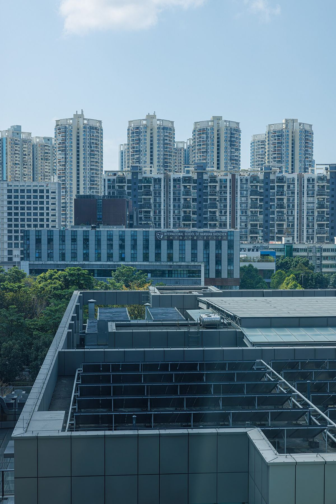
IB DP선전인터내셔널 스쿨 오브 난산 선전 (ISNS) 과외
International School of Nanshan Shenzhen · IB 연속과정
수학·영어·과학 1:1 화상과외 안내 →
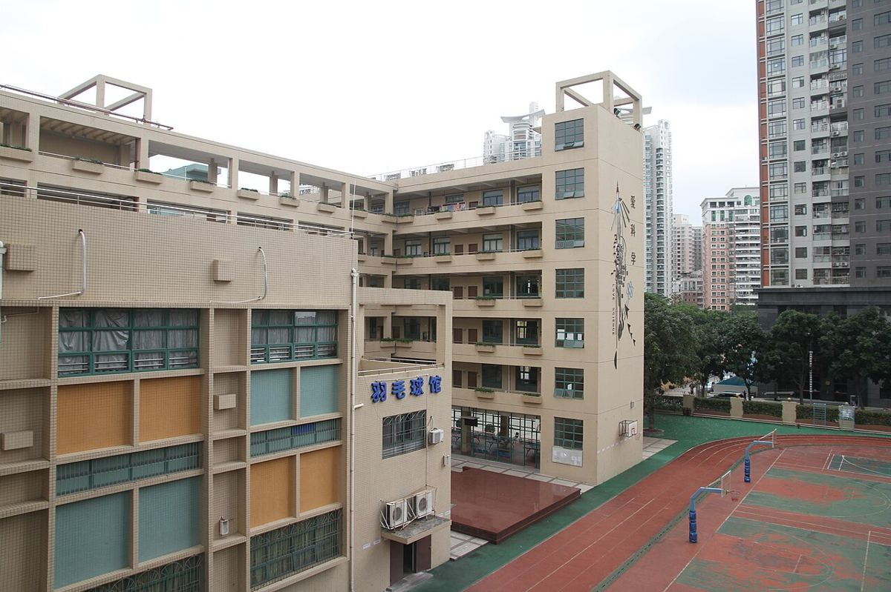
IGCSE · A-Level선전선전 칼리지 오브 인터내셔널 에듀케이션 (SCIE) 과외
Shenzhen College of International Education · 영국식 커리큘럼
수학·영어·과학 1:1 화상과외 안내 →
베이시스 인터내셔널 스쿨 선전 과외
BASIS International School Shenzhen · 미국식 커리큘럼
수학·영어·과학 1:1 화상과외 안내 →
해로우 인터내셔널 스쿨 선전 첸하이 과외
Harrow International School Shenzhen Qianhai · 영국식 커리큘럼
수학·영어·과학 1:1 화상과외 안내 →
머치스턴 인터내셔널 스쿨 선전 과외
Merchiston International School Shenzhen · 영국식 커리큘럼
수학·영어·과학 1:1 화상과외 안내 →
선와이 국제학교 (SWIS) 과외
Shen Wai International School · IB 연속과정
수학·영어·과학 1:1 화상과외 안내 →
톈진 4곳 · 톈진 페이지 →
인터내셔널 스쿨 오브 톈진 (IST) 과외
International School of Tianjin · IB 연속과정
수학·영어·과학 1:1 화상과외 안내 →
웰링턴 칼리지 인터내셔널 톈진 과외
Wellington College International Tianjin · 영국식 커리큘럼
수학·영어·과학 1:1 화상과외 안내 →
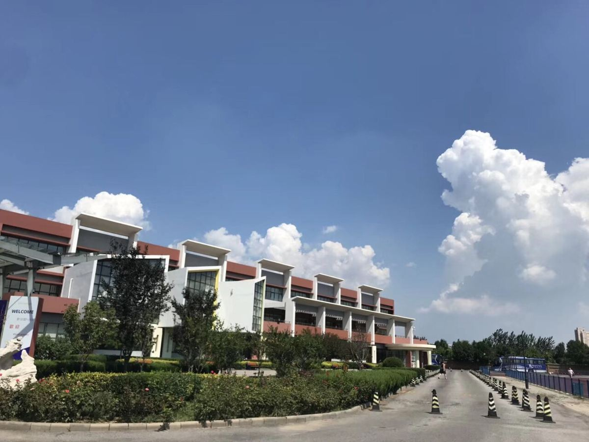
AP톈진톈진 인터내셔널 스쿨 (TIS) 과외
Tianjin International School · 미국식 커리큘럼
수학·영어·과학 1:1 화상과외 안내 →
테다 인터내셔널 스쿨 과외
Teda International School
수학·영어·과학 1:1 화상과외 안내 →
칭다오 5곳 · 칭다오 페이지 →
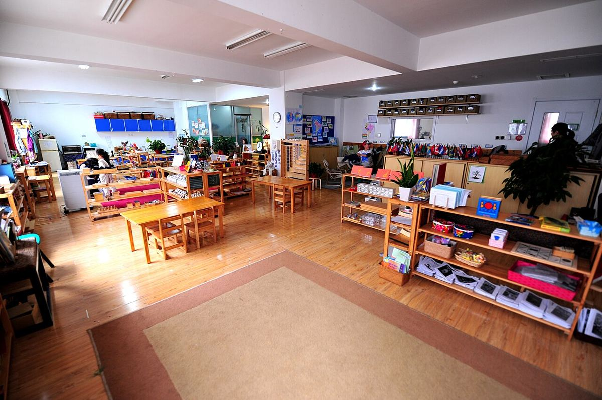
IB DP칭다오칭다오 아메라시아 인터내셔널 스쿨 (QAIS) 과외
Qingdao Amerasia International School
수학·영어·과학 1:1 화상과외 안내 →
인터내셔널 스쿨 오브 칭다오 (ISQ) 과외
International School of Qingdao · 미국식 커리큘럼
수학·영어·과학 1:1 화상과외 안내 →
칭다오 제1국제학교 (QISS) 과외
Qingdao No.1 International School of Shandong Province
수학·영어·과학 1:1 화상과외 안내 →
말번 칼리지 칭다오 과외
Malvern College Qingdao · 영국식 커리큘럼
수학·영어·과학 1:1 화상과외 안내 →
예청 국제학교 칭다오 (YCIS) 과외
Yew Chung International School of Qingdao
수학·영어·과학 1:1 화상과외 안내 →
쑤저우 2곳 · 쑤저우 페이지 →
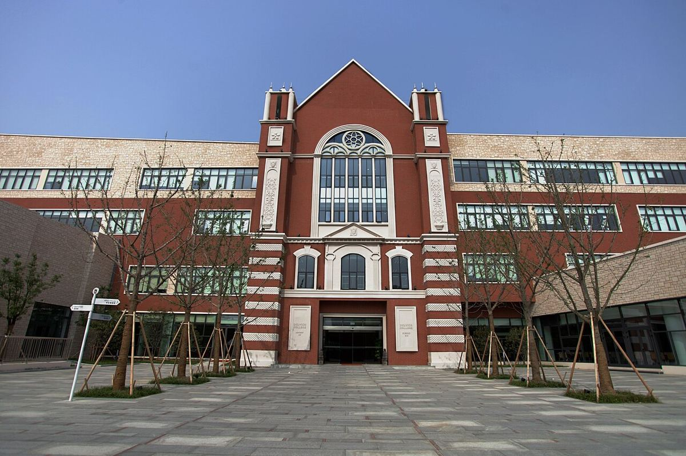
IGCSE · IB DP쑤저우덜위치 칼리지 쑤저우 과외
Dulwich College Suzhou · 영국식 커리큘럼
수학·영어·과학 1:1 화상과외 안내 →
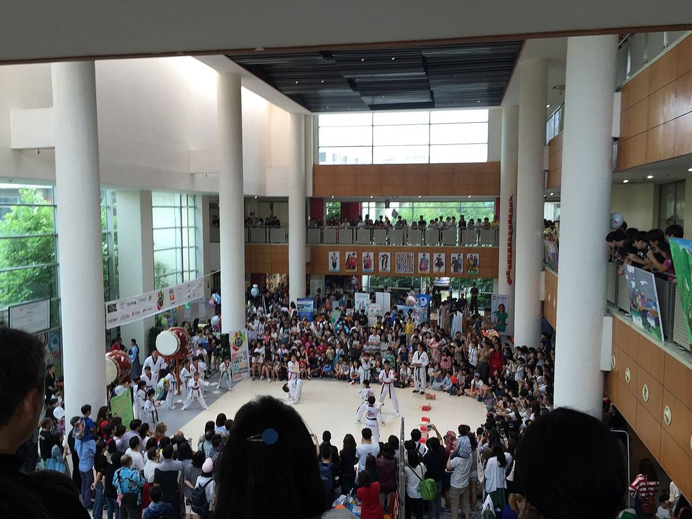
IB DP쑤저우쑤저우 싱가포르 국제학교 (SSIS) 과외
Suzhou Singapore International School · IB 연속과정
수학·영어·과학 1:1 화상과외 안내 →
난징 2곳 · 난징 페이지 →
난징 인터내셔널 스쿨 (NIS) 과외
Nanjing International School · IB 연속과정
수학·영어·과학 1:1 화상과외 안내 →
브리티시 스쿨 오브 난징 (BSN) 과외
The British School of Nanjing · 노드 앵글리아 산하
수학·영어·과학 1:1 화상과외 안내 →
항저우 2곳 · 항저우 페이지 →
항저우 인터내셔널 스쿨 (HIS) 과외
Hangzhou International School
수학·영어·과학 1:1 화상과외 안내 →
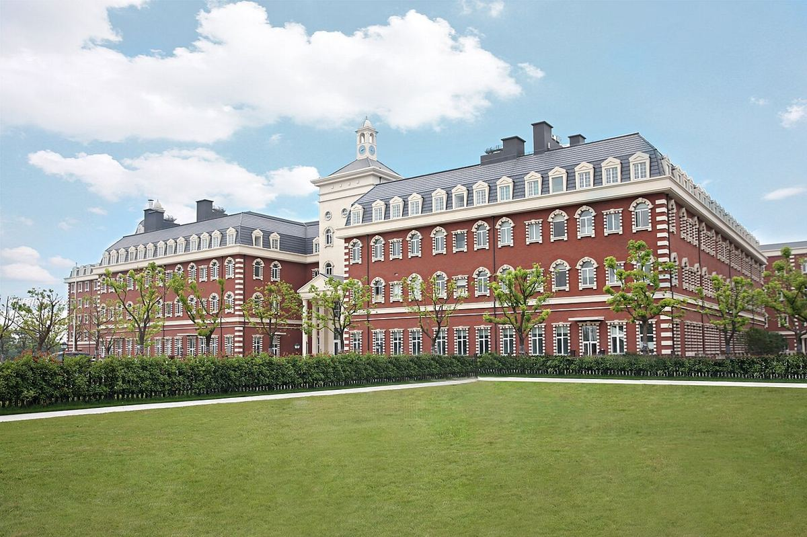
IGCSE · IB DP항저우웰링턴 칼리지 인터내셔널 항저우 과외
Wellington College International Hangzhou · 영국식 커리큘럼
수학·영어·과학 1:1 화상과외 안내 →
청두 3곳 · 청두 페이지 →
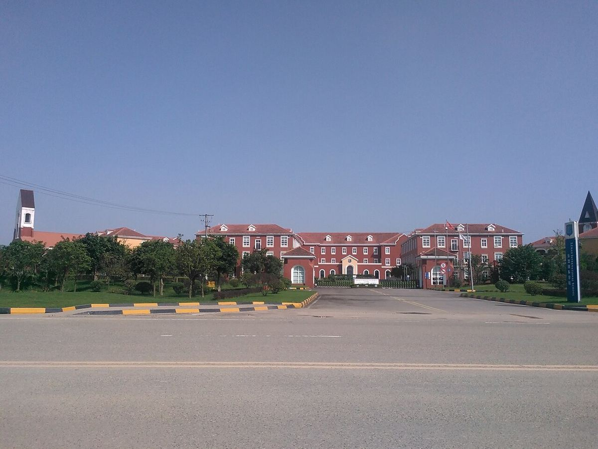
IB DP청두레만 인터내셔널 스쿨 청두 과외
Leman International School Chengdu
수학·영어·과학 1:1 화상과외 안내 →
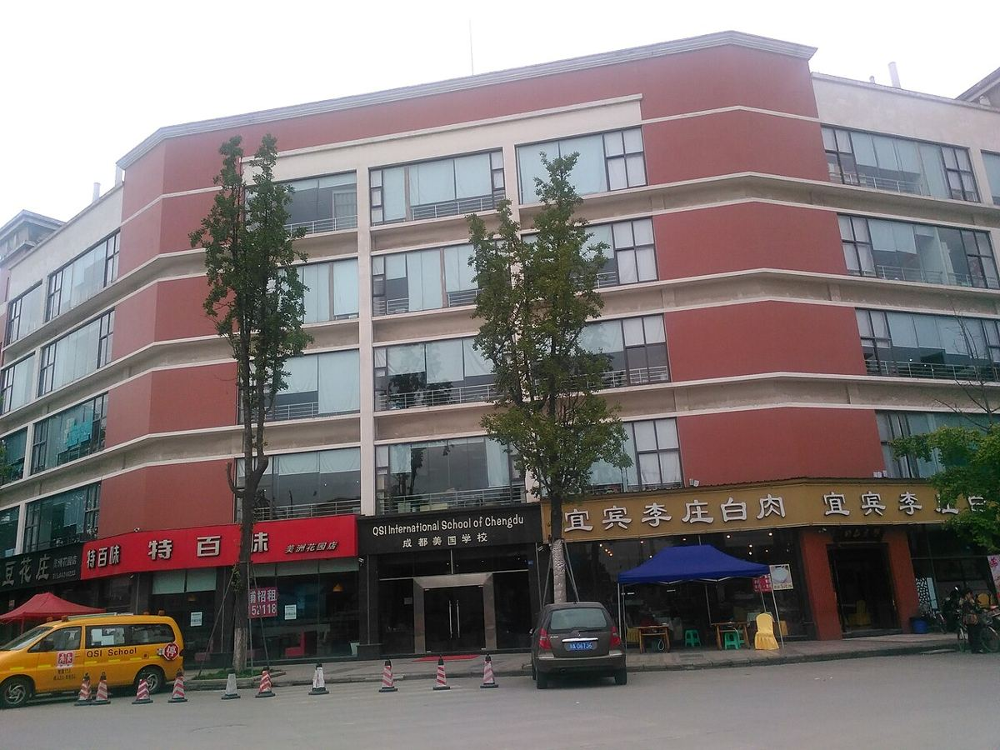
AP청두QSI 인터내셔널 스쿨 오브 청두 과외
QSI International School of Chengdu · 미국식 커리큘럼
수학·영어·과학 1:1 화상과외 안내 →
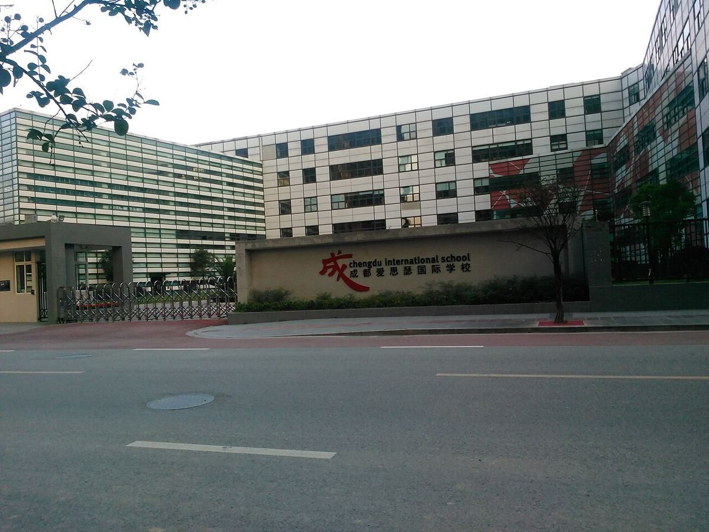
교육과정 상담 때 확인청두청두 인터내셔널 스쿨 (CDIS) 과외
Chengdu International School · 미국식 커리큘럼
수학·영어·과학 1:1 화상과외 안내 →
다롄 2곳 · 다롄 페이지 →
다롄 아메리칸 인터내셔널 스쿨 (DAIS) 과외
Dalian American International School · 미국식 커리큘럼
수학·영어·과학 1:1 화상과외 안내 →
다롄 메이플리프 국제학교 과외
Dalian Maple Leaf International School · 캐나다 BC주 커리큘럼
수학·영어·과학 1:1 화상과외 안내 →